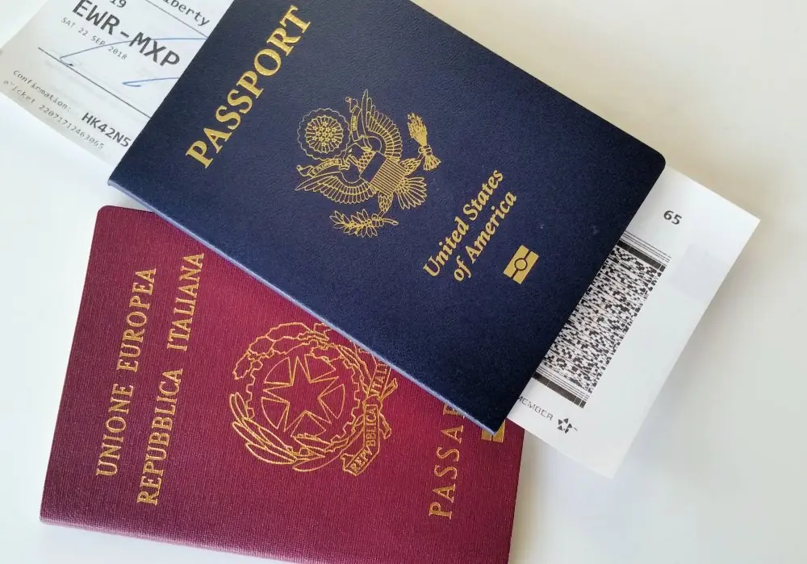

Italian Citizenship Through
Grandparents or Parents After 2025
How generational distance affects your Italian citizenship application, what documents each route requires, and how the 2025 law changed the rules.
Last updated: November 1, 2026
Short answer (as of November 2026)
You can still claim Italian citizenship through a grandparent, but only if that grandparent held exclusively Italian citizenship when you were born (or when they died, if earlier). An Italian-born grandparent who became a U.S. citizen before your birth generally does not qualify. Cases started by March 27, 2025 follow the old rules.
Key takeaways
- Since the 2025 reform, applicants born abroad generally need a parent or grandparent with exclusively Italian citizenship (or a parent who lived in Italy for two years after becoming a citizen)
- The paperwork required is largely the same whether applying through a parent or grandparent — but more generations means more documents
- If citizenship must pass through an Italian woman to a child born before 1948, you have a 1948 case requiring a court filing
- Claims relying only on a great-grandparent or earlier ancestor no longer qualify for new applications, unless started by March 27, 2025
How Law 74/2025 changed who can apply
Before the 2025 reform, Italian citizenship by descent (Jure Sanguinis) had no generational limit. Families with Italian great-grandparents, great-great-grandparents, or even more distant ancestors could apply, provided the legal requirements were met at each generational step.
Law 74/2025 added Article 3-bis to Italy's citizenship law. If you were born abroad and hold another citizenship, a new application now requires:
- A parent or grandparent who holds, or held at death, exclusively Italian citizenship (no other nationality), or
- A parent who lived in Italy for two continuous years after becoming a citizen and before your birth
Being born in Italy is not, by itself, the test. A grandparent who became a U.S. or Canadian citizen before your birth (or before their death) generally does not qualify you, even though they may have passed citizenship to your parent. If your claim relies only on a great-grandparent or earlier ancestor, you cannot file a new application under current law unless your case was started by March 27, 2025. See our Law 74/2025 guide for the transitional rules.
Applying through a parent
If one of your parents is Italian, yours is the most straightforward type of claim. Your lineage is just one generation. Under the 2025 rules, the key question is whether your parent held exclusively Italian citizenship when you were born (or at their death, if earlier), or lived in Italy for two continuous years after becoming a citizen and before your birth.
For more recent cases involving a parent who is still alive, records are typically easier to obtain, and the citizenship chain is shorter and simpler to document.
Documents needed when applying through a parent
- Parent's Italian birth certificate (obtained from the Italian comune)
- Parent's marriage certificate (if applicable and relevant to the lineage)
- Applicant's own birth certificate — long-form certified copy
- Proof of parent's non-naturalization or naturalization date (naturalization certificate or Certificate of Non-Existence)
- Apostilles and certified Italian translations for all non-Italian documents
- Death record for the parent if deceased and in the direct line
Applying through a grandparent
Applying through a grandparent is still possible under the 2025 law, provided your grandparent holds, or held at death, exclusively Italian citizenship. The process involves one additional generation of documentation. You must prove the citizenship chain from your grandparent through your parent down to you, and show that your grandparent never held another citizenship before your birth (or before their death).
The further back you go, the more important it becomes to verify naturalization dates carefully. Your grandparent may have emigrated in the early 20th century, and their records may require more research to locate.
Documents needed when applying through a grandparent
- Grandparent's Italian birth certificate (obtained from the Italian comune)
- Grandparent's marriage certificate (Italian or foreign)
- Parent's birth and marriage certificates
- Applicant's own birth certificate — long-form certified copy
- Naturalization records or Certificate of Non-Existence for the grandparent (if they emigrated)
- Proof that the qualifying parent or grandparent held exclusively Italian citizenship (for example, certificates confirming no other citizenship was held)
- Apostilles and certified Italian translations for all non-Italian documents
- Death records for each ancestor in the direct line
- For 1948 cases: both spouses' documentation is required
Which ancestor qualifies you under the 2025 rules?
Two separate questions decide a claim. First, is the citizenship chain unbroken from your Italian ancestor down to you? Second, does a parent or grandparent of yours meet Article 3-bis? Typical outcomes:
- A parent or grandparent who never held any other citizenship: usually meets the test
- A parent or grandparent who naturalized abroad before your birth (or before their death): generally does not meet the test, even if the chain is unbroken
- A parent who lived in Italy for two continuous years after becoming a citizen and before your birth: meets the alternative test
- A line through an Italian woman to a child born before 1948: a 1948 court case, which must also meet the 2025 rules
Former citizens who were born in Italy and lost citizenship by August 15, 1992 may be able to reacquire it by declaration until December 31, 2027, which can sometimes help a family. Ask us whether this applies to you.

What is a 1948 case?
If your Italian lineage passes through a female ancestor whose child (your direct ancestor) was born before January 1, 1948, you have what is called a "1948 case." Under the 1912 citizenship law, citizenship passed to children only through the father, and some women also lost citizenship when a foreign husband's nationality was conferred on them by marriage. As a result, consulates treat these children as not having received Italian citizenship from their mother.
Italian courts have repeatedly held that this gender-based rule is unconstitutional and cannot be used to deny citizenship to descendants today. A 1948 case is a court petition — filed by a licensed Italian attorney — asking an Italian court to recognize that the citizenship was validly transmitted despite the historical discrimination. These cases have strong precedent and are regularly won.
Importantly, new 1948 cases must also meet Article 3-bis: a parent or grandparent of the applicant must have held exclusively Italian citizenship (or a parent must meet the two-year residence rule). That person is not necessarily the female ancestor at the center of the 1948 argument, so each lineage needs individual review.
1948 cases cannot be processed at a consulate or municipality — they must go through the Italian court system, handled by our partner Italian attorneys.
The paperwork requirement doesn't change with generation — but the volume does
Regardless of whether you are applying through a parent or grandparent, the types of documents required are largely the same. What changes is the number of records you need to assemble. Every generation in the chain requires its own birth, marriage, and death certificates, as well as evidence of citizenship status at the time of each child's birth.
This is one reason to act sooner rather than later: older records are harder to locate, may be damaged or incomplete, and may require more effort to obtain from Italian municipalities. Our document procurement team handles this process for clients from the the United States, and elsewhere.
Documents by generation
| Situation | Documents Required |
|---|---|
| Applying through parents |
Parent's Italian Birth Certificate Parent's Marriage Certificate (if applicable) Applicant's Own Birth Certificate (Long Form) Proof of Parent's Non-Naturalization or Naturalization Date Apostilles & Certified Translations (all non-Italian documents) Death Record (if applicable) |
| Applying through grandparents |
Grandparent's Italian Birth Certificate Grandparent's Marriage Certificate (Italian or Foreign) Parent's Birth & Marriage Certificates Applicant's Own Birth Certificate Naturalization Records or Certificate of Non-Existence Apostilles & Certified Translations (all non-Italian documents) Death Records for each ancestor in the direct line Both spouses' documentation (required for 1948 cases) |
Not sure which generation applies to your case?
Check your eligibility in 2 minutes or book a free call — our team will review your lineage and confirm your best route forward.
Frequently asked questions
Yes, if that grandparent holds, or held at death, exclusively Italian citizenship. Under Article 3-bis (added by Law 74/2025), a grandparent who naturalized in another country before your birth (or before their death) generally does not qualify you, even if they were born in Italy. Claims relying only on a great-grandparent or earlier ancestor no longer qualify for new applications, unless the case was started by March 27, 2025.
You'll need your grandparent's Italian birth certificate, their marriage record, your parent's birth and marriage certificates, your own birth certificate, and proof of your grandparent's naturalization status (or Certificate of Non-Existence). Apostilles and certified Italian translations are required for all non-Italian documents.
The paperwork is largely the same in structure, but applying through a parent typically involves fewer documents since there's one fewer generation to document. The key requirement in both cases is proving an unbroken chain of Italian citizenship from your Italian ancestor down to you, and showing that the parent or grandparent you rely on meets the 2025 exclusive-citizenship test.
A 1948 case arises where citizenship must pass from an Italian woman to a child born before January 1, 1948. Under the 1912 law, citizenship passed to children only through the father, and some women also lost citizenship when a foreign husband's nationality was conferred on them by marriage. Italian courts have held these rules discriminatory, so these cases are decided in court, not at a consulate. New applications must also meet the 2025 Article 3-bis rules.
Costs depend on the route and case complexity. A standard consulate application averages $2,700–$3,100 USD, a court ATQ case averages $6,000–$7,500 USD, and a 1948 court case averages $6,300–$7,800 USD. Additional costs include document procurement, apostilles, and certified translations. See our pricing page for full details.
Related Guides
Continue reading

⚠️ Critical Update
Italy's 2025 Citizenship Law Change: Law 74/2025 Explained
What changed, who is affected, and what your options are under the new generational limit.
Read →
Documents
Documents required for Italian citizenship by descent
A complete checklist of every document you'll need and how to process them.
Read →
Jure Sanguinis
What is Jure Sanguinis?
The foundational principle behind Italian citizenship by descent, explained plainly.
Read →